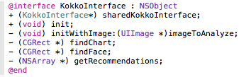
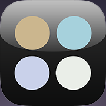
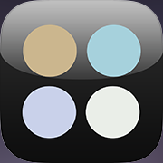
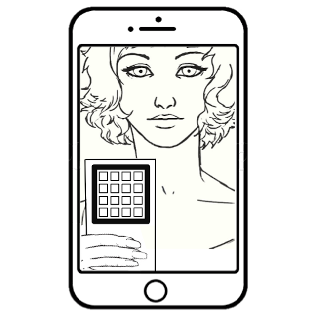

ColorSisters
iOS Release notes
Copyright (c) 2014 Kokko, Inc. All rights reserved.
Toolchain
- Xcode Version 6.1.1 (6A2008a)
- iOS SDK 8.1
- Deployment Target 7.1
- Mavericks, OS X 10.9.5 (13F34)
- Markdown for HTML documentation from Readme.md
- Git, https://@kokko.git.cloudforge.com/ioscolorsisters.git
- Cloud Forge
Tests
KokkoInterfaceTests are filled out and can be an excellent way to test many different types of images.
Builds are tested against
- iPod 5th generation iOS 8.1.1 (12B435)
- iPhone 5c iOS 8.1.1 (12B435)
Build Notes
2 Dec 2014
- Getting Started - set black background for the entire view
- Getting Started - support gestures for horizontal scroll
- Camera View - Once you touch “getting started” it should open the camera view (viewfinder mode), unless the camera is unavailable, in which case open in picker view.
- Camera View - Cancel should take you back to the launch pages
- Camera View - Flash control is disabled (rear camera)
27 Nov 2014
- Updated KokkoInterface with: unit tests, exception handling, NSArray returns, and proper signatures based on feedback

26 Nov 2014
- Moved KokkoInterface out of AppDelegate to [KokkoInterface init]

25 Nov 2014
- Version 1.5, Build 5
- Camera tested on iPod 5th & iPhone 5c (iOS 8.1.1 (12B435))
- KokkoInterface called in separate threads, called at didFinishLaunch() and after didFinishPickingMedia()
- Test results to show singleton, memory pointer values are identical
```
ColorSisters[4970:3070480] KokkoInterface async via Grand Central Dispatch
ColorSisters[4970:3070480] KokkoInterface init in didFinish() = 0x7fb2c0452420
ColorSisters[4970:3070447] KokkoInterface init in didFinishPickingMedia() = 0x7fb2c0452420
```
24 Nov 2014
- Version 1.4, Build 4
- Added interface class, as a singleton, to didFinishLaunchingWithOptions
- Initial version of UIPageControl for "home" or launch page
- Added Image assets from Kokko, Inc (FFAppImages.zip)
- Updated projects LaunchScreen.xib. (This is different from the spec's launch page).
- Fixed many layout issues due to Storyboards. Still TODO
20 Nov 2014
- Version 1.3, Build 3
- Turn off flash with .showsCameraControls = NO
- Added KokkoGetProductImages() with methods from email (Scott, 20 Nov 2014)
20 Nov 2014
- Version 1.2, Build 2
- Same known issues as Build 1
- Changed extension to UIImage+Match.mm
- Deployment target 7.1
18 Nov 2014
- Bundle Identifier - com.kokko.ColorSisters
- Version 1.0, Build 1
Known Issues
- Unit test of Interface is not working, see ColorSisterTests/InterfaceTests.m
- InterfaceTests.m compiles, but debugger does not trip in Unit test
- LaunchScreen.xib - needs spec
- Getting started needs text - "Launch and Tutorial (page 4-5 of Nov 12 spec)"
- Matches page - Layout is crowded at top
- Share Page - needs wiring to web service
Fixed Issues
- Storyboards are universal, and is messing up layouts on iPod Touch & iPhone 5c devices and simulators
- First revision of Interface, See Interface/UIImage+Match.m
- Interface is built as UIImage "category", which is basically an extension of UIImage
- See UIImage+Match.h
- findChart() and findFace() are methods, but in another iteration they should be propertys?!?
Images
Screen Shots and Previews

Icon
Icon-60
 

Icon-76

Icon-Small


Icon-Small-40

Getting Started
Page1.png

Page2.png
Page3.png

LaunchScreen.xib
CS_ios640x920.png
CS_ios640x960.png
CS_ios640x1136.png